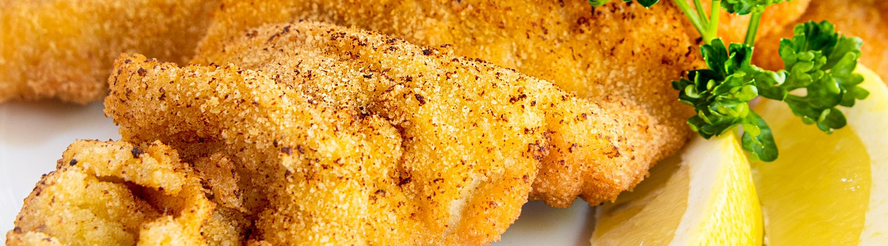

Wiener Schnitzel

Zutaten für
Zubereitung
Zuerst die Schnitzel zwischen Frischhaltefolie behutsam klopfen. Fleisch nun beidseitig salzen, in Mehl wenden, abklopfen, durch die Eier ziehen und in den Bröseln wenden. Dann die Schnitzel ca. 2 Finger hoch in Backfett goldgelb backen. Während des Backens die Pfanne ein wenig rütteln, damit die Schnitzel gleichmäßig goldbraun werden. Schnitzel herausheben, auf Küchenpapier abtropfen lassen. Zum Schluss die gewaschene Zitrone in Spalten schneiden und die fertigen Wiener Schnitzel mit Zitronenspalten garnieren.
Rezept Erstellt von